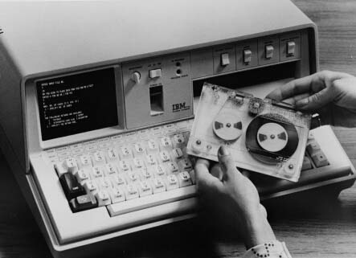

The 5100 weighed 50 pounds, and had between 16 and 64 thousand positions of main storage. The 5-inch built-in monitor displayed 16 lines of 64 characters (no graphics), and information could be read in from or stored on magnetic tape cartridges that held up to 200,000 characters worth of information.